OS-Lab1
Lab1
思考题
Thinking 1.1 在阅读 附录中的编译链接详解 以及本章内容后，尝试分别使用实验环境中的原生 x86 工具链（gcc、ld、readelf、objdump 等）和 MIPS 交叉编译工具链（带有mips-linux-gnu- 前缀，如 mips-linux-gnu-gcc、mips-linux-gnu-ld），重复其中的编译和解析过程，观察相应的结果，并解释其中向objdump传入的参数的含义。
x86编译解析
1
vim hello.c
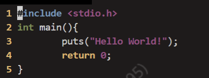
1
gcc -E hello.c//预处理
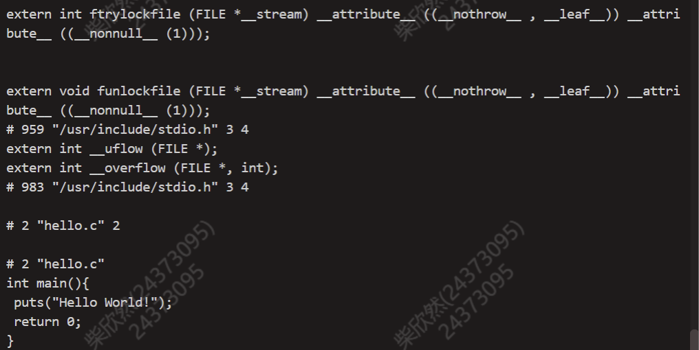
1
2
3
4//只编译不链接
gcc -g -c hello.c
//反汇编解析
objdump --section=.text--disassemble=main--source hello.o > out.txt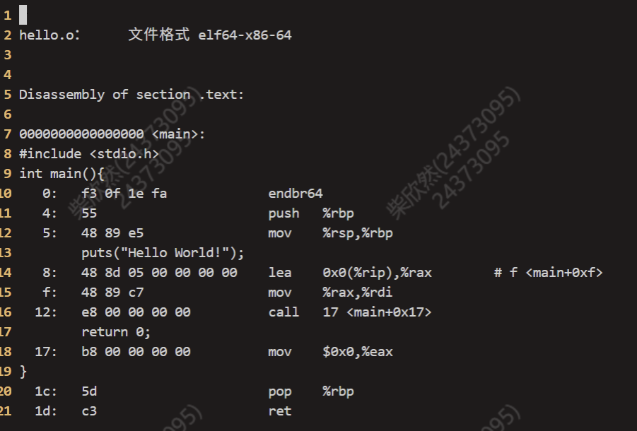
1
2
3
4//编译并链接
gcc -g -static hello.c -o hello
//反汇编解析
objdump --disassemble --source hello > out2.txt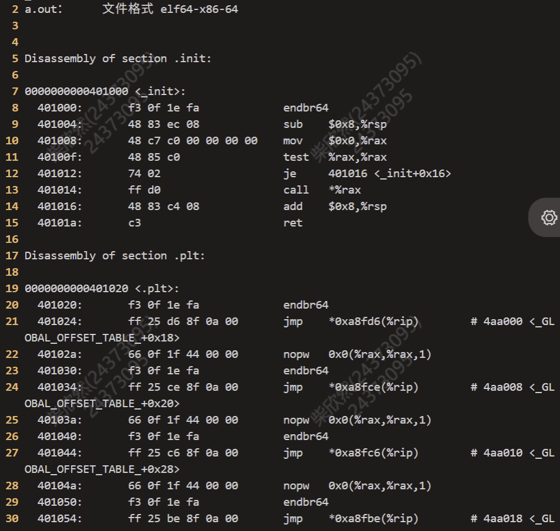
mips交叉编译
1 | mips-linux-gnu-gcc -E hello.c//预处理 |
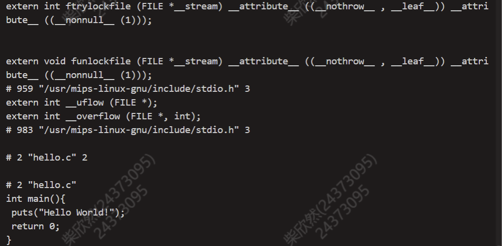
1 | mips-linux-gnu-gcc -g -c hello.c//只编译不链接 |
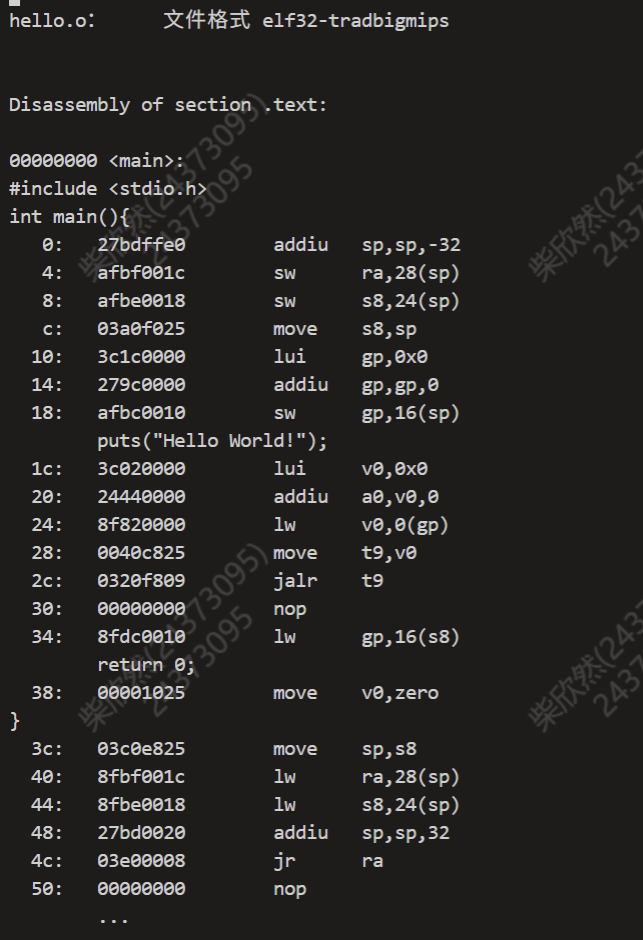
1 | mips-linux-gnu-gcc -g -static hello.c -o hello//编译并链接 |
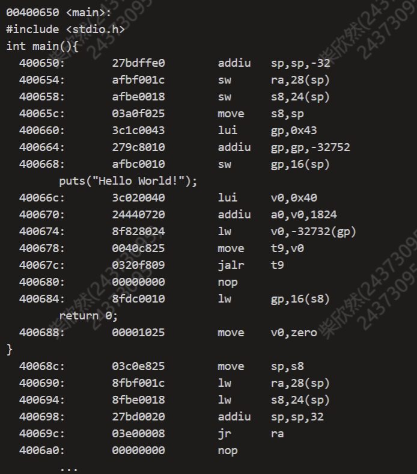
- objdump参数含义
--section=.text表示仅处理.text节的内容--disassemble=main表示仅反汇编main符号的代码--source表示显示汇编代码与源代码的对应关系
简写：-D反汇编所有的section-d反汇编特定机器码的section-S尽可能反汇编出源代码，尤其当编译的时候指定了-g这种调试参数时，效果比较明显,隐含了-d参数-s显示指定section的完整内容。默认所有的非空section都会被显示。
Thinking 1.2 思考下述问题：
• 尝试使用我们编写的readelf程序，解析之前在target目录下生成的内核ELF文件。
• 也许你会发现我们编写的readelf程序是不能解析readelf 文件本身的，而我们刚才介绍的系统工具readelf 则可以解析，这是为什么呢？（提示：尝试使用readelf-h，并阅读tools/readelf 目录下的 Makefile，观察 readelf 与 hello 的不同）
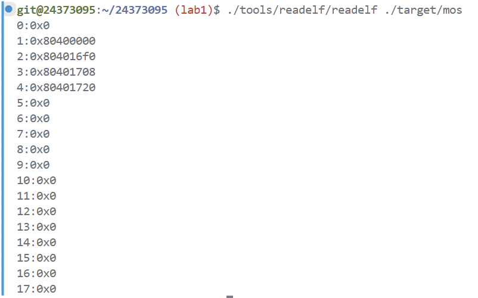
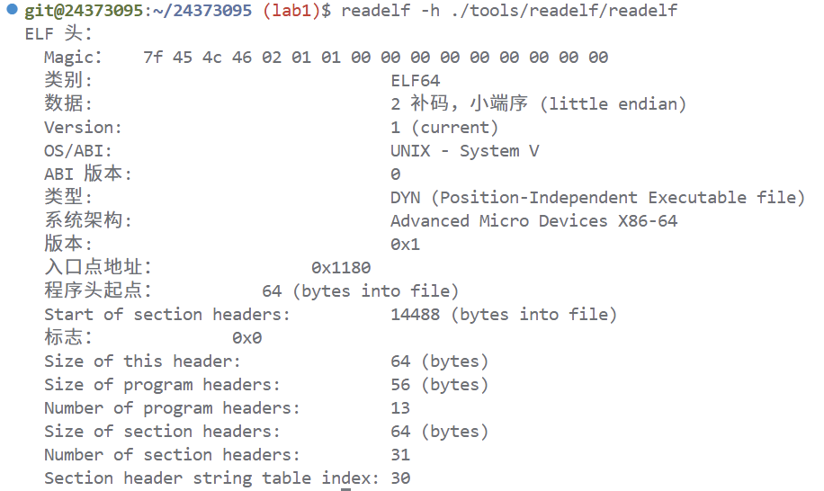
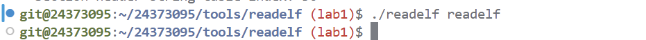
hello是静态的-static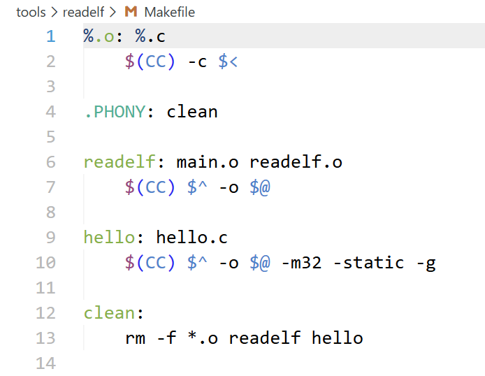
我们实现的 ELF 解析功能是简化版，只支持较基础的 ELF 文件格式；而编译出的 readelf 本身通常是动态链接、甚至是 PIE，可执行文件类型和段/节结构都比静态链接的
hello 更复杂。hello 使用 -static 后，不依赖动态链接器，ELF 中不会出现或较少出现 .dynamic、.interp、动态重定位等复杂内容，文件类型和布局是我们程序支持的情况，所以能够被解析。
在理论课上我们了解到，MIPS体系结构上电时，启动入口地址为0xBFC00000（其实启动入口地址是根据具体型号而定的，由硬件逻辑确定，也有可能不是这个地址，但一定是一个确定的地址），但实验操作系统的内核入口并没有放在上电启动地址，而是按照内存布局图放置。思考为什么这样放置内核还能保证内核入口被正确跳转到？（提示：思考实验中启动过程的两阶段分别由谁执行。）
- 需要启动的入口地址是
bootloader的入口地址。bootloader将内核可执行文件拷贝到内存中，之后将控制权交给操作系统。 我们的实验支持加载ELF格式内核，启动流程被简化为加载内核到内存，之后跳转到内核入口。
- Linker Script 通过
lds文件控制各段(包括内核)以及各节加载到我们预期的位置。与此同时kernel.lds规定了ENTRY(_start)，即把内核入口定为_start这个函数。
1
2
3
4
5
6
7
8
9SECTIONS {
. = 0x80010000;
.text : { *(.text) }
.data : { *(.data) }
.bss : { *(.bss) }
bss_end = .;
. = 0x80400000;
end = . ;
}- 我们通过设置
/init/start.S中_start函数，就可以正确的跳转至mips_init函数:1
2
3
4
5
6EXPORT(_start)
at
reorder
mtc0 zero, CP0_STATUS
li sp, 0x80400000
jal mips_init
- Linker Script 通过
难点分析
ELF 文件部分
1. Section 与 Segment 的区分
ELF 文件同时包含节（section）和段（segment）两种结构。
节用于编译和链接阶段，如 .text、.data、.bss；段用于程序加载和运行。
- 实验中解析 ELF 时使用节表
- 内核加载到内存时依赖段表
本质区别是：节描述“程序如何组织”，段描述“程序如何运行”。
建立总模型：
1 | ELF 文件 |
启动过程部分
1. 启动流程理解
实验中启动过程为：
ELF 文件 → QEMU 加载到内存 → 跳转入口地址 → 执行内核
- 内核不是自己加载自己，而是由 QEMU 完成加载
2. Linker Script 的作用
kernel.lds 决定内核在内存中的布局，如 .text、.data、.bss 的位置。
- 程序运行地址在链接阶段就已经确定，而不是运行时决定
3. _start 的作用
内核从 _start 开始执行，主要完成：
- 清空 .bss
- 初始化栈
跳转到 mips_init
.bss 需要手动清零
- 栈必须提前设置，否则无法执行 C 代码
4. 内核地址放置问题
内核被放置在 kseg0 区域，是因为该区域可以直接访问物理内存。
- 如果地址设置错误，内核将无法正常运行
printk 函数部分
1. 不能使用 printf
printf 依赖 C 标准库，而内核尚未建立运行环境，因此需要自行实现 printk。
2. printk 的结构
printk 的实现分为三层：
- printk：接口函数
- vprintfmt：格式解析
outputk：逐字符输出
输出过程涉及格式解析，而不仅仅是打印字符串
3. 可变参数机制
printk 使用 va_list 处理不定参数。
- 根据格式符（如 %d、%x）正确提取参数类型
4. vprintfmt 的实现
主要过程包括：
- 扫描格式字符串
- 解析格式说明符
- 输出对应数据
- 处理宽度、对齐、填充等格式细节
实验体会
lab1
刚开始看指导书看得坑坑巴巴的，读代码也一头雾水，根本不知道该如何下手，但是捋清楚整个内核启动过程之后，完成补全代码的任务就很快了。
另外课下是用跳板机做的，来回切换非常方便非常丝滑，希望课上不会被卡住。
课上还是蛮简单的，给的信息非常充足，非常顺利地完成了exam和extra。
lab1-pre-exam
做起来还是非常简单的。其实就是将两个输出形式结合起来。在理解之后就非常快了。
原创说明
参考了往届三位学长学姐的博客。感谢他们的精心整理和付出。
https://hyggge.github.io/2022/03/21/os/os-lab0-shi-yan-bao-gao/
https://yanna-zy.github.io/2023/03/19/BUAA-OS-0/
https://demiurge-zby.github.io/p/buaa-os-lab0-%E9%A2%84%E5%A4%87%E7%9F%A5%E8%AF%86/?t=1773901742315